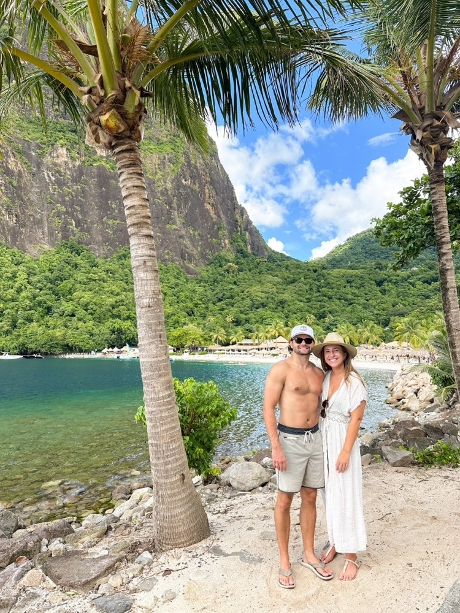
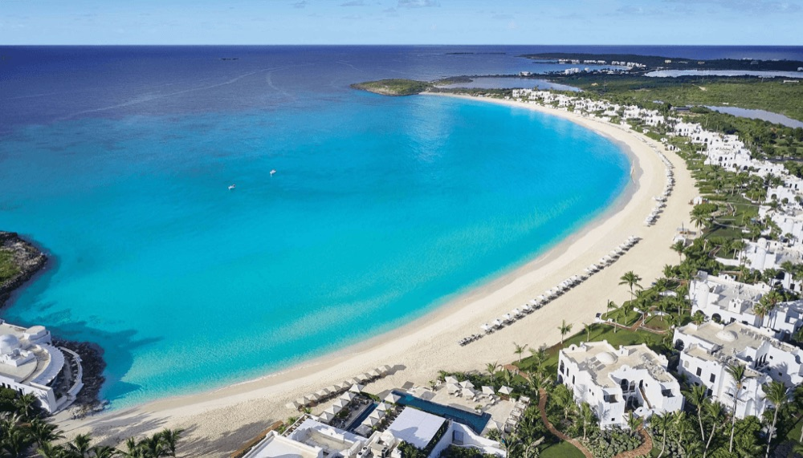
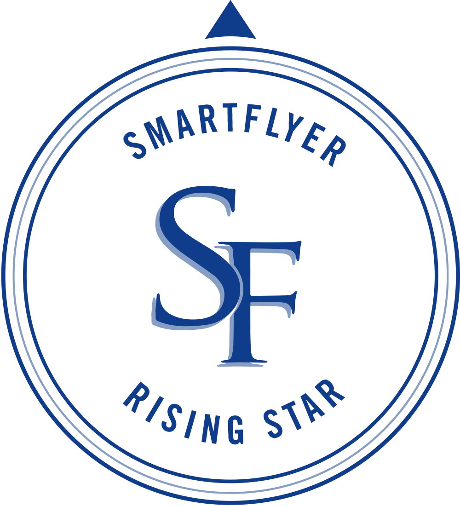

26 of the Best Honeymoon Destinations Around the World
A globe-spanning shortlist of honeymoon destinations paired with luxury hotels and exclusive booking perks.
Read the post →
For travelers who value their time as much as the journey itself. Private itineraries shaped around the world’s best hotels, experiences, and people.
Why book with us
Complimentary breakfast, upgrades, resort credits, priority waitlist access, and VIP recognition at many of the world’s most sought-after hotels.
Book a Hotel With Perks


 Pearl Partner — Oetker Collection
Pearl Partner — Oetker Collection


 Montage
Montage


Uncover a shortlist of extraordinary stays behind our most unforgettable itineraries.
Click any pin to explore
How we work
A hotel is only one piece of the journey. We coordinate the flights, transfers, dining reservations, private touring, special requests, and the dozens of details that separate a good trip from an effortless one. Through trusted relationships around the world, we help ensure every piece fits together seamlessly before you ever leave home.
Preferred-partner benefits at many of the world’s leading hotels, including daily breakfast, resort credits, room upgrades, and priority for early check-in and late check-out whenever available.
Hotels, private transfers, dining, touring, spa appointments, golf tee times, and thoughtful downtime recommendations — curated around your travel style, not pulled from a template.
Your itinerary lives in a mobile travel app, with confirmations, logistics, and recommendations in one place. If plans shift while you’re away, we’re here to help.
From villas and yachts to safaris, cruises, milestone celebrations, and multi-generational journeys, we coordinate the details that turn a reservation into a fully realized trip.
From the Journal
The hotels we’re booking, the destinations we’re watching, and the travel ideas we’re sharing with clients every day.
A globe-spanning shortlist of honeymoon destinations paired with luxury hotels and exclusive booking perks.
Read the post →
An on-the-ground review of Viceroy Sugar Beach, where powder sands meet the dramatic Pitons of St. Lucia.
Read the post →
A month-by-month guide to babymoon escapes, from white-sand beaches to mountain retreats and quiet nature stays.
Read the post →
The founder
Wander by Wilson was built on a simple belief: exceptional travel should feel effortless.
As a two-time SmartFlyer Rising Star and member of Virtuoso’s invitation-only network, Wilson combines trusted industry relationships with firsthand destination knowledge to create journeys that feel personal, seamless, and thoughtfully executed.
From milestone anniversaries and honeymoons to family adventures and once-in-a-lifetime safaris, clients return because they know every recommendation has been carefully vetted — and every detail has someone looking after it.
Today, Wander by Wilson works with travelers across Europe, Africa, the Caribbean, and beyond, pairing exceptional hotels with the experiences, guides, and local partners that bring a destination to life.

From our travelers